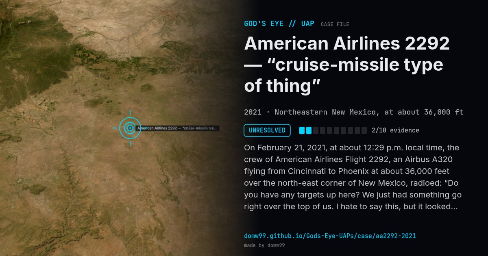

American Airlines 2292 — “cruise-missile type of thing”

On February 21, 2021, at about 12:29 p.m. local time, the crew of American Airlines Flight 2292, an Airbus A320 flying from Cincinnati to Phoenix at about 36,000 feet over the north-east corner of New Mexico, radioed: “Do you have any targets up here? We just had something go right over the top of us. I hate to say this, but it looked like a long cylindrical object that almost looked like a cruise missile type of thing, moving really fast right over the top of us.” The transmission was recorded by Steve Douglass, a radio listener. American Airlines at first denied that it was authentic, then confirmed that it was from Flight 2292 after talking to the crew. The FAA said controllers saw nothing on radar, and the Pentagon said it had no tests in the area.
Explanation
No explanation has been given. The FAA said air traffic controllers saw no object on their radar. The Pentagon said the military was not conducting tests in the area that day, and the FBI said it was aware of the report.
What was seen
Shape: Long cylinder, “almost like a cruise missile”
Witnesses: The crew of American Airlines Flight 2292
Duration: Seconds
Sources
Browse
- United States
- 2020s
- Unresolved
- Aviation encounters
- Pilot and aircrew witnesses
- Audio recordings or radio transcripts
- Cylinders and cigar shapes